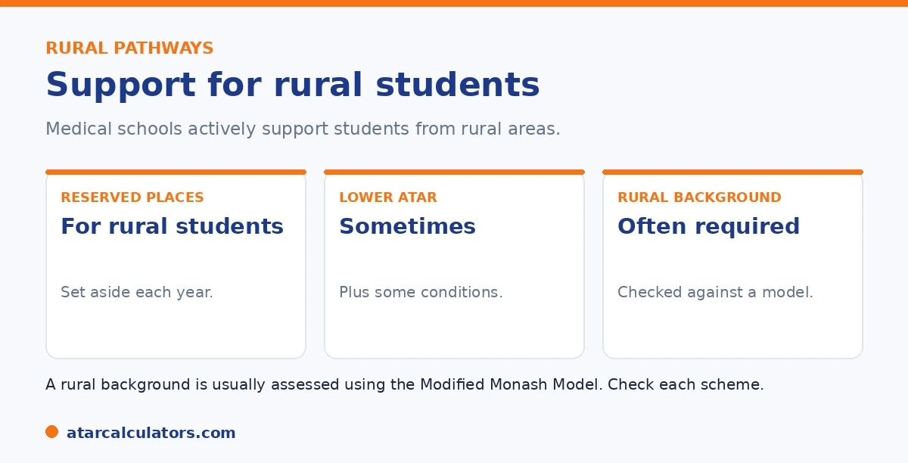

Here is the short version. Many medical schools reserve places for students from a rural background. And these pathways can have a lower ATAR than standard entry, sometimes with conditions like a commitment to rural study or practice. A rural background is usually needed and assessed against the Modified Monash Model. These are real routes into medicine, designed to support rural and regional communities.
Australia needs more rural doctors, and medical schools actively support students from rural areas to fill that gap. For rural students, this can make medicine more accessible.
Below is how rural pathways work. To explore your options, use our medicine ATAR calculator.
Key takeaways
- Many medical schools reserve places for rural students.
- Rural pathways can have a lower ATAR than standard entry.
- There are often conditions, like rural study or practice.
- A rural background is usually needed.
- It is assessed against the Modified Monash Model.
- These pathways support rural and regional communities.
Why rural pathways exist
Rural and regional Australia has fewer doctors than it needs. And students from rural areas are more likely to go back and work there. So medical schools run rural pathways to help fill that gap.

The result is a set of pathways. They make medicine easier to reach for rural students, while helping areas that need doctors.
Lower ATAR, with conditions
Rural pathways can ask for a lower ATAR than standard entry. The exact floor varies by university. But it can sit below the cut-offs that apply to other applicants.
In exchange, there are often conditions. You may need to study at a rural campus, or work in a rural area for a time after you qualify. It is worth knowing these before you apply.
The rural background requirement
To use a rural pathway, you usually need a real rural background. This is checked against a standard called the Modified Monash Model. It sorts areas by how rural or remote they are.
You usually need to have lived in a rural area for a set time. So check whether your background counts, using the rules each university applies. See our rural pathways guide.
Want to see your medicine options?
Try the medicine ATAR calculator →Which universities offer them
Many medical schools across Australia run rural pathways, both undergraduate and graduate. Some are based at rural campuses. These keep a strong focus on rural and regional health.
The exact pathways, ATAR floors, and conditions vary. So check each university directly. If you are from a rural area, it is worth looking at several. See our lowest ATAR for medicine guide.
Are rural pathways worth it?
For the right student, very much. A rural pathway can be the easiest route into medicine. Many students also value the focus on community and rural health.
The conditions are a real commitment. But for students who want to work in rural medicine anyway, they fit well. If that is you, this is one of the strongest routes there is.
Weighing it up honestly means looking at both sides. On the benefit side, rural pathways can lower the effective ATAR requirement meaningfully, reserve places specifically for rural applicants, and weight rural background heavily in selection. So for a student from the country they are often the most realistic route into direct-entry medicine rather than a fallback. Many students also find the emphasis on community and rural health genuinely appealing. Training in regional centres can bring broader clinical experience, and real responsibility earlier than a large city hospital placement. On the commitment side, the conditions are not trivial. Eligibility depends on a documented rural residency history. And some pathways come with expectations or obligations around where you train or practise. So it is essential to read the specific terms of each scheme before committing. The decision becomes straightforward when you are honest about your intentions. If you grew up rurally and can see yourself practising in a rural or regional community, the pathway aligns your background, your entry route and your career. That is a strong combination. If your heart is set on metropolitan practice, weigh the conditions carefully against the entry advantage. For the many students who genuinely want rural medicine, though, these pathways are among the best-designed and most accessible routes into the profession.
Bonded medical places
Bonded medical places are offered in return for a commitment to work in areas of need, often rural or regional, for a period after graduating. In exchange, they can accept ATARs below the usual threshold.
The commitment is a real obligation, so bonded places suit students genuinely open to working where doctors are needed. For those students, they are a valuable route that also serves communities short of medical staff.
Because the terms of bonded schemes change, check the current conditions carefully before relying on one. Understand the length and nature of the commitment, so the pathway fits your plans as well as your ATAR.
The rural commitment
Rural pathways often ask for evidence of rural intent or background, and may expect graduates to train or work in regional areas. This is the trade-off for a lower ATAR threshold: a genuine connection to rural practice.
So these pathways reward students who actually want to work rurally, rather than those simply seeking an easier entry. If that describes you, a rural pathway can be both a realistic route in and a good fit for your goals.
Who qualifies as rural
Definitions of rural background vary between universities and schemes, usually based on where you have lived and for how long. If you think you might qualify, check each program’s specific criteria, since they differ.
Even without a rural background, some programs accept students committed to rural practice through other pathways. So it is worth researching each option rather than assuming you do or do not qualify.
How to apply through a rural pathway
To use a rural entry pathway, you generally need to declare a rural background and provide evidence, such as proof of living in a designated rural area for a set period. You then apply through the university's rural entry scheme.
So the process is specific, and the definitions of rural are set by official classifications. Checking each university's exact requirements early matters, since eligibility rules and evidence differ between schemes.
Common questions
What ATAR do you need for rural medicine?
It varies by university, but rural pathways can have a lower ATAR than standard direct entry, sometimes below the headline cut-offs. There are usually conditions, and a rural background is needed. Check each university for the current floor.
Are rural pathways easier to enter?
They can be more accessible for students from a rural background, with a lower ATAR floor at some universities. But they come with conditions, such as rural study or practice, and need a genuine rural background.
Do you need a rural background?
Usually, yes. Rural pathways need a genuine rural background, assessed against the Modified Monash Model, which classifies how rural or remote an area is. You typically need to have lived in a rural area for a defined period.
Which universities offer rural medicine pathways?
Many medical schools across Australia run them, both undergraduate and graduate, some based at rural campuses. The exact pathways, ATAR floors, and conditions vary, so check each university directly.
What is the Modified Monash Model?
It is a standard that classifies areas by how rural or remote they are. Medical schools use it to assess whether you have a rural background for rural-entry pathways. Your area's classification determines eligibility.
Explore rural medicine pathways
See realistic routes into medicine based on your ATAR. Free, and no signup.
Open the medicine ATAR calculator →Related guides
This guide is general information for students and parents, not formal admissions advice. ATAR cut-offs, UCAT and GAMSAT requirements, interview formats and pathways vary by university and change every year. For graduate entry, applications run through GEMSAS, and the UCAT and GAMSAT are run by their own bodies. Any figures here are approximate and based on recent years. So always confirm the current details with each university and your state admissions centre (such as UAC, VTAC, QTAC, SATAC or TISC). Reviewed by the ATARCalculators Editorial Team.